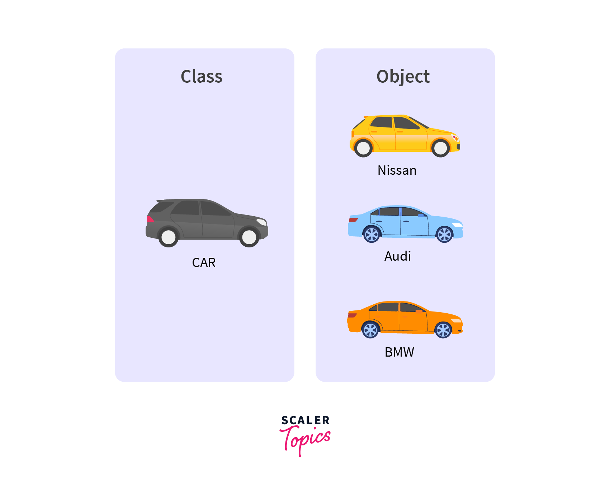

Object-Oriented Programming.
What is OOP?
OOP stands for Object-Oriented Programming, which is a programming computer programming model that is based on the concept of objects. Java is an object-oriented programming language, which means that it is designed to support the creation and manipulation of objects. In Java, you can create classes that define the attributes and behaviors of objects, and then create instances of those classes to represent specific objects.

To put it more simply, it is a way of writing computer programs that focuses on the concept of "objects". Much like a tangible, real-life object, an object is a thing that has certain characteristics (also called "attributes" or "properties") that can do certain things (also called "methods" or "behaviors"). For example, you could think of a car as an object. It has attributes like color and model, and it can do things like accelerate, brake, and turn. When you write a program using OOP in Java, you define classes that describe the objects in your program. A class is like a blueprint or a recipe for creating objects. It defines the attributes and behaviors that all objects of that class will have. For example, you could define a class called "Car" that has attributes like "color" and "model", and behaviors like "accelerate", "brake", and "turn". Then, you could create individual objects of that class that represent specific cars, each with their own values for the attributes.
Other Terms
Encapsulation: hide the inner workings of an object from the outside world, and
only expose a public interface that can be used to interact with the object.
This helps to ensure that the object's state remains consistent and that it
can't be accessed or modified in unexpected ways. Access modifiers, namely
private and public.
Inheritance: ability to create new classes that are based on existing classes, and
inherit their attributes and behaviors. This allows you to create more specific
classes that share common attributes and behaviors with their parent classes.
Sources
https://www.scaler.com/topics/java/oop-vs-functional-vs-procedural/